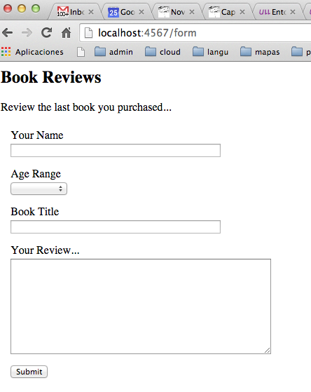
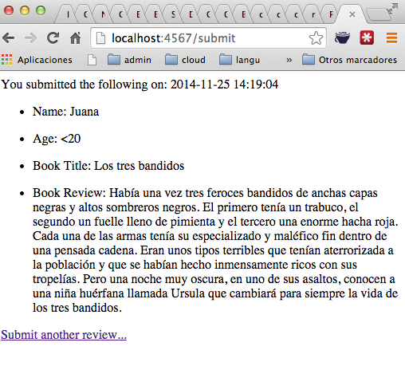

Siguiente: Testing con Rack::Test y Subir: Capybara y Rack::Test Anterior: Capybara y Rack::Test Índice General Índice de Materias
[~/application_testing_with_capybara/sinatra(master)]$ cat app.rb
require 'bundler/setup'
require 'sinatra'
class BookReview < Sinatra::Base
get '/form' do
erb :form
end
post '/submit' do
@name = params[:name]
@title = params[:title]
@review = params[:review]
@age = params[:age]
erb :result
end
end
#only run if invoked from command line - otherwise leave to Capybara
BookReview.run! if __FILE__ == $0

[~/application_testing_with_capybara/sinatra(master)]$ cat views/form.erb
<link rel="stylesheet" href="css/form.css">
<form action="/submit" method="post">
<header id="header" class="info">
<h2>Book Reviews</h2>
<div>Review the last book you purchased...</div>
</header>
<ul>
<li>
<label for="name">
Your Name
</label>
<input type="text" id="name" name="name" maxlegth="255">
</li>
<li>
<label class="desc" for="age">
Age Range
</label>
<div>
<select id="age" name="age">
<option value="-" selected="selected">
</option>
<option value="<20" >
Under 20
</option>
<option value="20-50" >
20 - 50
</option>
<option value="50+" >
Over 50
</option>
</select>
</div>
</li>
<li>
<label for="book_title">
Book Title
</label>
<input type="text" id="book_title" name="title" maxlegth="255">
</li>
<li>
<label for="review">
Your Review...
</label>
<textarea id="review" name="review" rows="10" cols="50"></textarea>
</li>
<li>
<input type="submit" value="Submit"/>
</li>
</ul>
</form>
[~/application_testing_with_capybara/sinatra(master)]$ cat views/result.erb
<div class="saved_review">
<p>You submitted the following on: <%= Time.new.strftime("%Y-%m-%d %H:%M:%S") %> </p>
<ul>
<li>
<p id="name">Name: <%= @name %></p>
</li>
<li>
<p id="age">Age: <%= @age %></p>
</li>
<li>
<p id="title">Book Title: <%= @title %></p>
</li>
<li>
<p id="review">Book Review: <%= @review %></p>
</li>
</ul>
<a href="/form">Submit another review...</a>
</div>

Veamos ahora como hacer las pruebas para esta aplicación usando Capybara.